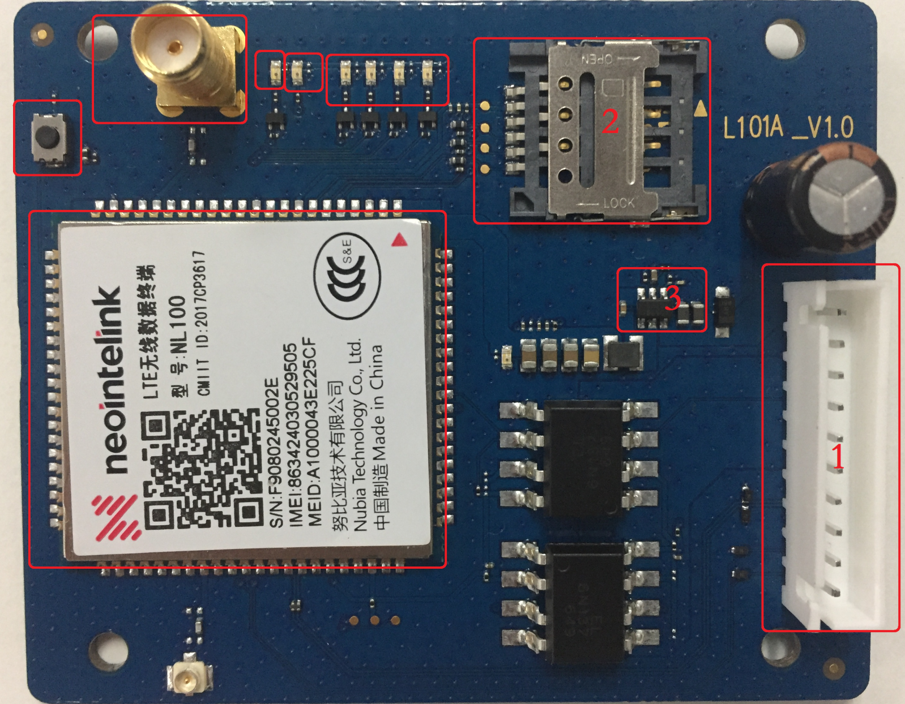
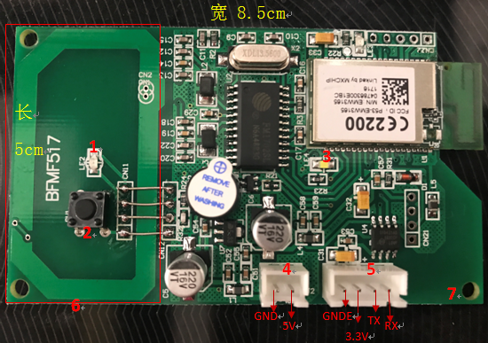

原理
此按摩椅由四部分组成：
- 按摩椅硬件
- 单片机（后续文章中以U表示）
- 4G模块（后续文章中以M表示）
- 阿里云服务器（后续文章中以S表示）
单片机的功能主要是控制按摩椅操作，比如力度，手法等。使用串口与4G模块通讯。
4G模块的功能主要是与服务器进行通讯，接收服务器指令，通过串口下发指令到下位机
硬件接口


数据通信格式
单片机->4G模块
指令概括
SOI(1)+ACK/CMD(1)+PARAMETER(10)+EOI(1)
解析：
SOI:开始字节，固定为0X7E
CMD:(0x00：获取设备运行状态，0x01:零重力，0x02:升降调节，0x03:气压档位调节)，0x04:背部按摩力度
PARAMETER 参数
EOI:结束字节， 固定为0X5A
ACK:应答最高2位表示用户单片机对命令的执行结果：00：执行成功 01：命令错误 10：参数错误 11：其它错误低6位的值与接收到的CMD值相等。
具体通信协议
| 功能 | 方向 | SOI | CMD | P1 | P2 | P3 | P4 | P5 | P6 | P7 | P8 | P9 | P10 | EOI |
|---|---|---|---|---|---|---|---|---|---|---|---|---|---|---|
| 获取设备运行状态 | M->U | 7E | 0 | 0 | 0 | 0 | 0 | 0 | 0 | 0 | 0 | 0 | 0 | 5A |
| 设备运行状态响应 | U->M | 7E | 0 | TI | T2 | 气压（1-10） | 按摩力度（1-10） | 零重力（0-3） | 背部升降（0-2） | 腿部升降（0-2） | 按摩状态（0-2） | 有人检测（0-1） | 设备音量（0-10） | 5A |
| 零重力 | M->U | 7E | 01 | 0-3 | 0 | 0 | 0 | 0 | 0 | 0 | 0 | 0 | 0 | 5A |
| 升降调节 | M->U | 7E | 02 | 0-3 | 0 | 0 | 0 | 0 | 0 | 0 | 0 | 0 | 0 | 5A |
| 气压 | M->U | 7E | 03 | 1-10 | 0 | 0 | 0 | 0 | 0 | 0 | 0 | 0 | 0 | 5A |
| 按摩力度 | M->U | 7E | 04 | 1-10 | 0 | 0 | 0 | 0 | 0 | 0 | 0 | 0 | 0 | 5A |
4G模块->服务器
指令概括
代码中封装了一个结构体，作为一个MSG在两者之间传输。
1 | struct uart_msg{ |
具体通信协议
| 指令 | type | no | value | data | 描述 |
|---|---|---|---|---|---|
| 授权指令 | 1 | 100 | 100 | \ | 指令1为授权指令，时间为value |
| 重启指令 | 2 | 0 | 0 | \ | 指令2为重启指令，no和value无效 |
| 暂停/启动 | 3 | 0 | 0/1 | \ | 指令3为暂停启动指令，value为1时暂停，为0时启动 |
| 心跳包 | 102 | 0 | xx | \ | 第一个x表示椅子是否在动，第二个x表示椅子上是否有人 |
| 零重力指令 | 999 | 0 | 2 | 0-3 | 零重力角度0-3 |
| 升降调节 | 999 | 0 | 3 | 0-3 | 背部以及腿部调节0-3 |
| 气压调节 | 999 | 0 | 4 | 1-10 | 数值越大，力度越强 |
| 背部摩擦 | 999 | 0 | 5 | 1-10 | 数值越大，力度越强 |
| 音量调节 | 999 | 0 | 6 | 0-10 | 数值越大，音量越大 |
| 按摩手法 | 999 | 0 | 7 | 1-10 | 表示不同手法 |
代码简述
代码从阿里云sdk/examples/linux/mqtt/demo.c开始
1 | enum { |
上述为定义的指令集
服务器与4G模块的通讯函数是massageArived函数
1 | /********************************************************************** |
这里面涉及的就是将服务器发送过来的数据重新封装从串口发送给下位单片机！
uart_data_trans()函数: 将数据包发送到单片机
1 | /************************ |
这上面的函数就是发送数据包到单片机
parse_server_message()函数：解析服务器发送过来的原始数据填充到struct uart_msg结构体
1 | int parse_server_message(char* msg_buf, struct uart_msg *msg) |
原始数据是 type:1, no:10, value:0, data:10, code:null
所以以“，”作为分隔，“：”再次分隔可得到相应的数据
总结
本次修改是基于阿里云iot-sdk下运行的，所以关于mqtt代码都是现成的，有兴趣可以查看相关的源码